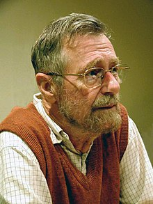
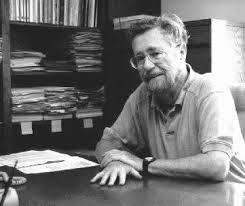

Edsger W. Dijkstra
1970'lerden bu yana, Dijkstra'nın ana menfaati resmi doğrulama idi. O tarihte hâkim olan görüş, birisinin önce bir program yazması ve daha sonra doğruluğunun matematiksel bir kanıtı olmasıydı. Dijkstra sonuçta elde edilen kanıtların uzun ve hantal olduğunu ve kanıtın programın nasıl geliştirildiğine dair bir fikir vermediğini itiraz etti. Alternatif bir yöntem, "eldeki kanıt ve program eli geliştirmek" için program türetmesidir. Bir programın ne yapması gerektiği üzerine bir matematiksel şartname ile başlar ve uygulanabilir bir programa dönüşene kadar matematiksel dönüşümleri şartnameye uygular. Elde edilen programın inşaat tarafından doğru olduğu bilinmektedir. Dijkstra'nın daha sonraki çalışmaları, matematiksel argümanları düzene sokma yollarıyla ilgilidir. 2001 yılındaki bir röportajda "zerafet" arzusunu belirtti; burada doğru yaklaşım, düşünceleri tamamlanıncaya kadar işleme sokmak yerine zihinsel olarak işlemek olacaktı. Yaptığı benzetme, Mozart ve Beethoven'ın kompozisyon yaklaşımlarını karşılaştırmaktı.
Dijkstra, dağıtılmış bilgi işlem araştırmalarının ilk öncülerinden biriydi. Bazıları kağıtlarının bir kısmını bile alanı oluşturanlar olarak düşünüyorlar. Özellikle, "Dağıtılmış Kontrol Olsalardaki Öz-İstikrarı Sağlayan Sistemler" başlıklı yazısı, kendi kendini istikrar alt alanını başlattı.
Dijkstra programlamayla ilgili denemeleri ile tanınıyordu; programcının bu karmaşıklığı başarıyla yönetme umuduyla programcıların mümkün olan her hüneri ve soyutlamayı kullanmaları gerektiğini iddia eden ilk kişi bu kadar doğası gereği zor ve karmaşıktır.
Dijkstra, bilgisayar biliminin programlamadan daha soyut olduğuna inanmaktadır; bir keresinde "Bilgisayar Bilimi, astronomi teleskoplardan çok bilgisayarlar hakkında değil."

